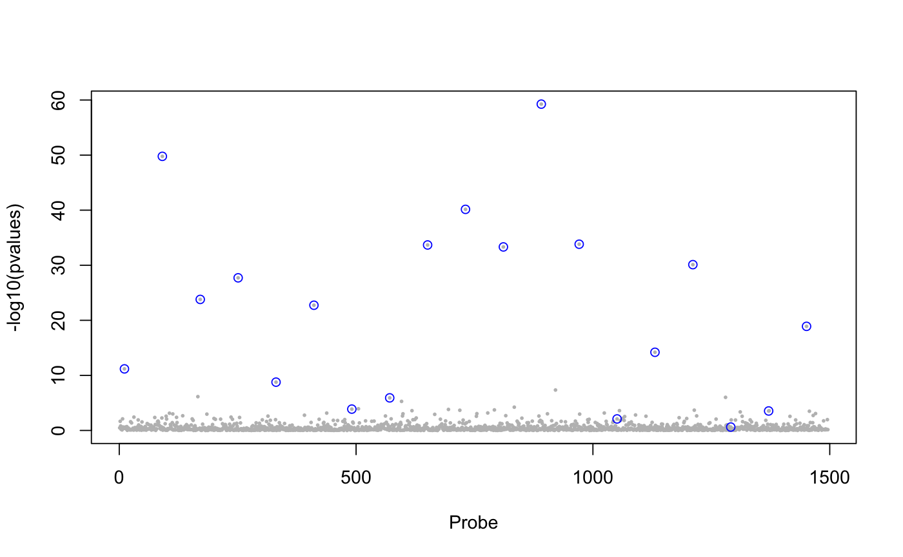

This function computes regularized least squares estimates
for latent factor mixed models using a lasso penalty.
The response variable matrix Y and the explanatory variable are centered.
library(lfmm)
data(example.data)
Y <- example.data$genotype
X <- example.data$phenotype
## fits an lfmm model, i.e, computes B, U, V:
mod.lfmm <- lfmm_lasso(Y = Y, X = X, K = 6)
#> It = 1/100, err2 = 0.163976365842701
#> It = 2/100, err2 = 0.150909974059673
#> It = 3/100, err2 = 0.150916204324367
#> === lambda = 0.140473176172514, no zero B proportion = 0.000445384701035519
#> It = 1/100, err2 = 0.150916343641328
#> It = 2/100, err2 = 0.150915474257531
#> === lambda = 0.134088453517859, no zero B proportion = 0.00103923096908288
#> It = 1/100, err2 = 0.150915412709901
#> It = 2/100, err2 = 0.150913975701533
#> === lambda = 0.127993926361644, no zero B proportion = 0.00196711576290688
#> It = 1/100, err2 = 0.150913871462829
#> It = 2/100, err2 = 0.150911733598199
#> It = 3/100, err2 = 0.150911574423684
#> === lambda = 0.122176404870596, no zero B proportion = 0.00300634673198976
#> It = 1/100, err2 = 0.150911562286119
#> It = 2/100, err2 = 0.150908693359626
#> It = 3/100, err2 = 0.150908471900049
#> === lambda = 0.116623298709719, no zero B proportion = 0.00456519318561407
#> It = 1/100, err2 = 0.150908454358739
#> It = 2/100, err2 = 0.150904858480186
#> It = 3/100, err2 = 0.150904571937454
#> === lambda = 0.111322589794174, no zero B proportion = 0.00627250120625023
#> It = 1/100, err2 = 0.15090454848927
#> It = 2/100, err2 = 0.150900036019481
#> It = 3/100, err2 = 0.150899664398151
#> === lambda = 0.106262806279627, no zero B proportion = 0.00868500167019263
#> It = 1/100, err2 = 0.150899632925777
#> It = 2/100, err2 = 0.150894188051445
#> It = 3/100, err2 = 0.15089372454809
#> === lambda = 0.101432997734774, no zero B proportion = 0.0117284637939353
#> It = 1/100, err2 = 0.150893683746887
#> It = 2/100, err2 = 0.15088677407547
#> It = 3/100, err2 = 0.150886139575646
#> === lambda = 0.0968227114423116, no zero B proportion = 0.0172586571651264
#> It = 1/100, err2 = 0.150886078815922
#> It = 2/100, err2 = 0.150877332524138
#> It = 3/100, err2 = 0.150876484609145
#> === lambda = 0.0924219697770726, no zero B proportion = 0.0232713506291059
#> It = 1/100, err2 = 0.150876397664274
#> It = 2/100, err2 = 0.150866300064518
#> It = 3/100, err2 = 0.150865245863369
#> === lambda = 0.0882212486123514, no zero B proportion = 0.0308057751549568
#> It = 1/100, err2 = 0.150865127405691
#> It = 2/100, err2 = 0.150852979201675
#> It = 3/100, err2 = 0.150851614317005
#> It = 4/100, err2 = 0.15085144561458
#> === lambda = 0.0842114567077, no zero B proportion = 0.0406784693612441
#> It = 1/100, err2 = 0.15085142359072
#> It = 2/100, err2 = 0.150837437029405
#> It = 3/100, err2 = 0.150835778354292
#> It = 4/100, err2 = 0.150835556784946
#> === lambda = 0.0803839160335798, no zero B proportion = 0.0504398173922726
#> It = 1/100, err2 = 0.150835525104705
#> It = 2/100, err2 = 0.150819852311015
#> It = 3/100, err2 = 0.150817925420533
#> It = 4/100, err2 = 0.150817651133121
#> === lambda = 0.0767303429902881, no zero B proportion = 0.0615744349181606
#> It = 1/100, err2 = 0.150817608898312
#> It = 2/100, err2 = 0.150800256036786
#> It = 3/100, err2 = 0.150798097100326
#> It = 4/100, err2 = 0.150797777273342
#> === lambda = 0.0732428304805127, no zero B proportion = 0.0729688601863193
#> It = 1/100, err2 = 0.15079772533025
#> It = 2/100, err2 = 0.150778759437279
#> It = 3/100, err2 = 0.150776367784302
#> It = 4/100, err2 = 0.150775995908666
#> === lambda = 0.0699138307967177, no zero B proportion = 0.086181939650373
#> It = 1/100, err2 = 0.150775931768293
#> It = 2/100, err2 = 0.150755356008339
#> It = 3/100, err2 = 0.150752720059716
#> It = 4/100, err2 = 0.150752290155947
#> === lambda = 0.0667361392863235, no zero B proportion = 0.10206732732064
points(example.data$causal.set,
-log10(pv$calibrated.pvalue)[example.data$causal.set],
type = "h", col = "blue")
#> length(cs) < K. Filling cs with zero
## run lfmm
lfmm.res <- lfmm_lasso(Y = dat$Y, X = dat$X, K = 3, nozero.prop= 0.2)
#> It = 1/100, err2 = 3.09972286418917
#> It = 2/100, err2 = 1.1291159841957
#> It = 3/100, err2 = 1.13350221928543
#> It = 4/100, err2 = 1.13410961482982
#> It = 5/100, err2 = 1.1342220928173
#> It = 6/100, err2 = 1.13424205033958
#> It = 7/100, err2 = 1.13424558351665
#> === lambda = 1.55404824857831, no zero B proportion = 0.008
#> It = 1/100, err2 = 1.13424620847951
#> It = 2/100, err2 = 1.13317492960443
#> It = 3/100, err2 = 1.13299090974803
#> It = 4/100, err2 = 1.13295889952306
#> It = 5/100, err2 = 1.13295331638127
#> === lambda = 1.48341435725845, no zero B proportion = 0.009
#> It = 1/100, err2 = 1.13295234159247
#> It = 2/100, err2 = 1.13170439289551
#> It = 3/100, err2 = 1.13148305124337
#> It = 4/100, err2 = 1.13144316613406
#> It = 5/100, err2 = 1.13143591856082
#> It = 6/100, err2 = 1.1314345928759
#> === lambda = 1.41599088531106, no zero B proportion = 0.014
#> It = 1/100, err2 = 1.13143434896749
#> It = 2/100, err2 = 1.13000897730796
#> It = 3/100, err2 = 1.12974887640976
#> It = 4/100, err2 = 1.12970072634506
#> It = 5/100, err2 = 1.12969175065208
#> It = 6/100, err2 = 1.12969006928532
#> === lambda = 1.3516319142209, no zero B proportion = 0.016
#> It = 1/100, err2 = 1.12968975305519
#> It = 2/100, err2 = 1.12818386269154
#> It = 3/100, err2 = 1.12790247330931
#> It = 4/100, err2 = 1.12784901344557
#> It = 5/100, err2 = 1.12783876121384
#> It = 6/100, err2 = 1.1278367813136
#> === lambda = 1.29019815769444, no zero B proportion = 0.021
#> It = 1/100, err2 = 1.12783639677999
#> It = 2/100, err2 = 1.12620163858989
#> It = 3/100, err2 = 1.12589635646658
#> It = 4/100, err2 = 1.12583846053603
#> It = 5/100, err2 = 1.12582738395494
#> It = 6/100, err2 = 1.12582525117395
#> === lambda = 1.23155666021517, no zero B proportion = 0.023
#> It = 1/100, err2 = 1.12582483839566
#> It = 2/100, err2 = 1.12428874774938
#> It = 3/100, err2 = 1.12400944701811
#> It = 4/100, err2 = 1.12395759941585
#> It = 5/100, err2 = 1.12394784820467
#> It = 6/100, err2 = 1.12394599527551
#> === lambda = 1.17558050929999, no zero B proportion = 0.024
#> It = 1/100, err2 = 1.12394564012923
#> It = 2/100, err2 = 1.12255899619733
#> It = 3/100, err2 = 1.12230937834197
#> It = 4/100, err2 = 1.1222635082411
#> It = 5/100, err2 = 1.12225497927304
#> It = 6/100, err2 = 1.1222533792737
#> === lambda = 1.12214856083404, no zero B proportion = 0.025
#> It = 1/100, err2 = 1.12225307690991
#> It = 2/100, err2 = 1.12080534659118
#> It = 3/100, err2 = 1.12054778091325
#> It = 4/100, err2 = 1.12050068559573
#> It = 5/100, err2 = 1.12049190986314
#> It = 6/100, err2 = 1.12049024923448
#> === lambda = 1.07114517688943, no zero B proportion = 0.029
#> It = 1/100, err2 = 1.1204899309157
#> It = 2/100, err2 = 1.11907984990901
#> It = 3/100, err2 = 1.11882787051359
#> It = 4/100, err2 = 1.11878150574882
#> It = 5/100, err2 = 1.11877274783099
#> It = 6/100, err2 = 1.11877105712864
#> === lambda = 1.02245997546057, no zero B proportion = 0.034
#> It = 1/100, err2 = 1.11877072477494
#> It = 2/100, err2 = 1.11743683368981
#> It = 3/100, err2 = 1.11719799738509
#> It = 4/100, err2 = 1.11715344125517
#> It = 5/100, err2 = 1.11714486319739
#> It = 6/100, err2 = 1.11714316876259
#> === lambda = 0.975987591574387, no zero B proportion = 0.039
#> It = 1/100, err2 = 1.11714282705588
#> It = 2/100, err2 = 1.11587045897641
#> It = 3/100, err2 = 1.11564710738994
#> It = 4/100, err2 = 1.11560601625567
#> It = 5/100, err2 = 1.11559816653235
#> It = 6/100, err2 = 1.11559661932586
#> === lambda = 0.931627449258432, no zero B proportion = 0.042
#> It = 1/100, err2 = 1.11559630652447
#> It = 2/100, err2 = 1.11445835414061
#> It = 3/100, err2 = 1.11426205606325
#> It = 4/100, err2 = 1.11422607765823
#> It = 5/100, err2 = 1.11421913701843
#> It = 6/100, err2 = 1.11421773904658
#> === lambda = 0.889283543873437, no zero B proportion = 0.048
#> It = 1/100, err2 = 1.11421744760629
#> It = 2/100, err2 = 1.11319650549052
#> It = 3/100, err2 = 1.11302692433143
#> It = 4/100, err2 = 1.11299667053196
#> It = 5/100, err2 = 1.11299087988401
#> It = 6/100, err2 = 1.11298969831945
#> === lambda = 0.848864234339156, no zero B proportion = 0.056
#> It = 1/100, err2 = 1.11298944418181
#> It = 2/100, err2 = 1.11203704371509
#> It = 3/100, err2 = 1.11188548505006
#> It = 4/100, err2 = 1.11185927879301
#> It = 5/100, err2 = 1.11185431358512
#> === lambda = 0.810282044803871, no zero B proportion = 0.067
#> It = 1/100, err2 = 1.11185328566038
#> It = 2/100, err2 = 1.11096739349947
#> It = 3/100, err2 = 1.11083289086484
#> It = 4/100, err2 = 1.1108107401242
#> It = 5/100, err2 = 1.11080670565256
#> === lambda = 0.77345347532833, no zero B proportion = 0.079
#> It = 1/100, err2 = 1.11080588583955
#> It = 2/100, err2 = 1.10995100215866
#> It = 3/100, err2 = 1.10983312569508
#> It = 4/100, err2 = 1.10981619105826
#> It = 5/100, err2 = 1.10981359034137
#> === lambda = 0.738298821174389, no zero B proportion = 0.087
#> It = 1/100, err2 = 1.10981315069711
#> It = 2/100, err2 = 1.10893975885743
#> It = 3/100, err2 = 1.1088288724094
#> It = 4/100, err2 = 1.10881514674437
#> It = 5/100, err2 = 1.10881353455215
#> === lambda = 0.704742000307264, no zero B proportion = 0.104
#> It = 1/100, err2 = 1.10881337321852
#> It = 2/100, err2 = 1.10801992412805
#> It = 3/100, err2 = 1.10793079845493
#> It = 4/100, err2 = 1.1079226609802
#> === lambda = 0.672710388738073, no zero B proportion = 0.119
#> It = 1/100, err2 = 1.10792254966054
#> It = 2/100, err2 = 1.10721260120405
#> It = 3/100, err2 = 1.10715009351717
#> === lambda = 0.64213466335031, no zero B proportion = 0.132
#> It = 1/100, err2 = 1.10714992291684
#> It = 2/100, err2 = 1.10650187928255
#> It = 3/100, err2 = 1.10646646235312
#> It = 4/100, err2 = 1.10647525908021
#> It = 5/100, err2 = 1.10648054197059
#> It = 6/100, err2 = 1.10648254764987
#> === lambda = 0.612948651870105, no zero B proportion = 0.155
#> It = 1/100, err2 = 1.10648323268764
#> It = 2/100, err2 = 1.10589853695633
#> It = 3/100, err2 = 1.10588721252644
#> It = 4/100, err2 = 1.10590456223951
#> It = 5/100, err2 = 1.10591277529238
#> It = 6/100, err2 = 1.10591578983536
#> === lambda = 0.58508918965556, no zero B proportion = 0.172
#> It = 1/100, err2 = 1.10591682608255
#> It = 2/100, err2 = 1.10538857721697
#> It = 3/100, err2 = 1.10539884682263
#> It = 4/100, err2 = 1.10542308909408
#> It = 5/100, err2 = 1.1054335467372
#> It = 6/100, err2 = 1.10543741265672
#> It = 7/100, err2 = 1.10543878873554
#> === lambda = 0.558495982995238, no zero B proportion = 0.199
#> It = 1/100, err2 = 1.10543927291026
#> It = 2/100, err2 = 1.10492447570993
#> It = 3/100, err2 = 1.10494509290239
#> It = 4/100, err2 = 1.10497365508049
#> It = 5/100, err2 = 1.10498593677568
#> It = 6/100, err2 = 1.10499055400342
#> It = 7/100, err2 = 1.1049922407201
#> === lambda = 0.533111478619939, no zero B proportion = 0.228
## plot size effect matrix
id <- seq_along(lfmm.res$B)
cols <- c('red', 'green')[as.numeric(id %in% dat$outlier) + 1]
plot(id, lfmm.res$B, col = cols)
